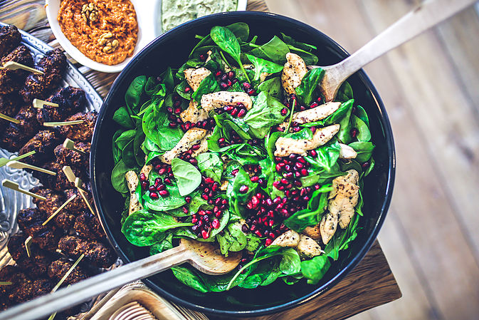

Una Alconbury, October 17, 2015
"Presentation is crucial when serving any meal," says Michael Crane, corporate executive chef of ARAMARK, which provides food services to hospitals, universities, stadiums, and businesses around the world. "You need to create 'art' to make your food interesting. If it looks good, they will want to try it, and that goes for healthier meals too."
To create your own culinary work of art, Crane advises that you treat the plate as one unified "canvas," keeping in mind the balance of the composition, the colors, the flow, the patterns, or lines. "This will give your presentation as much depth as possible," he says.
